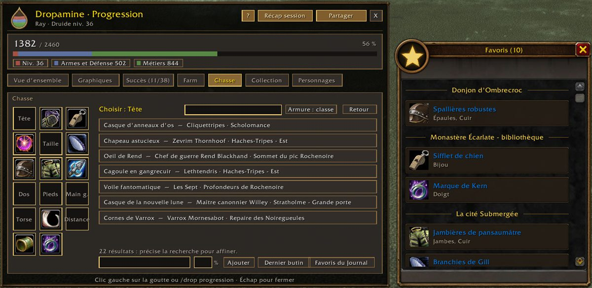

CHAQUE +1
Le +1 qui tombe
Chaque point gagné a droit à sa fête.
- Un toast pour chaque compétence, arme, Défense ou niveau.
- Le niveau total et ses paliers, avec feu d'artifice.
- Ce qui monte sur ta cible, avant même de frapper.

ADDON GRATUIT · WOW FOREVER
Dropamine affiche toutes tes compétences d'un coup d'œil, façon Old School RuneScape, et fête chaque point gagné. Carnet de collection, chasse BiS, guide de métier, alerte Hardcore : tout ce qui rend la progression addictive, sans jamais toucher à l'interface du jeu.

CHAQUE +1
Chaque point gagné a droit à sa fête.
COLLECTION
Chaque donjon, chaque boss, chaque objet qui te manque.

CHASSE BIS
Choisis l'objet, puis va le chercher.

MÉTIERS 3.10
Ta prochaine étape de métier, dans l'infobulle.

HARDCORE 3.10
Prêt pour le mode Hardcore de Forever.

HISCORES
Niveau, métiers et Défense lus dans l'armurerie officielle, chaque jour. Inscris ton personnage et compare-toi à ta guilde, ta classe, ta région.
World of Warcraft\_forever_\Interface\AddOns\, pour obtenir AddOns\Dropamine\Dropamine.toc./drop ouvre le panneau, /drop help liste les commandes.Ajoute les tables de butin des boss au carnet de collection et à la chasse, avec tes favoris.
Ta prochaine étape de métier dans l'infobulle, la flèche GPS, et la liste complète des recettes.
Précisent où trouver les patrons et recettes qui te manquent.
Des pages publiques de l'armurerie WoW Forever, lues une fois par jour avec l'API officielle de Blizzard : niveau, classe, race, guilde, mode de jeu, métiers, Défense, équipement, statistiques et image du personnage.
Uniquement les personnages inscrits. Un historique d'un point par jour sert aux courbes de progression.
Le formulaire de retrait supprime le personnage et son historique à la mise à jour suivante.
Aucun compte, aucun cookie, aucun traceur ni outil de mesure d'audience. Le site est hébergé par GitHub Pages ; les polices viennent de Google Fonts et les images des personnages des serveurs de Blizzard.
Projet communautaire, non affilié à Blizzard Entertainment. World of Warcraft et les images des personnages sont © Blizzard Entertainment. Dropamine et ce site : Raykuilu, licence MIT.